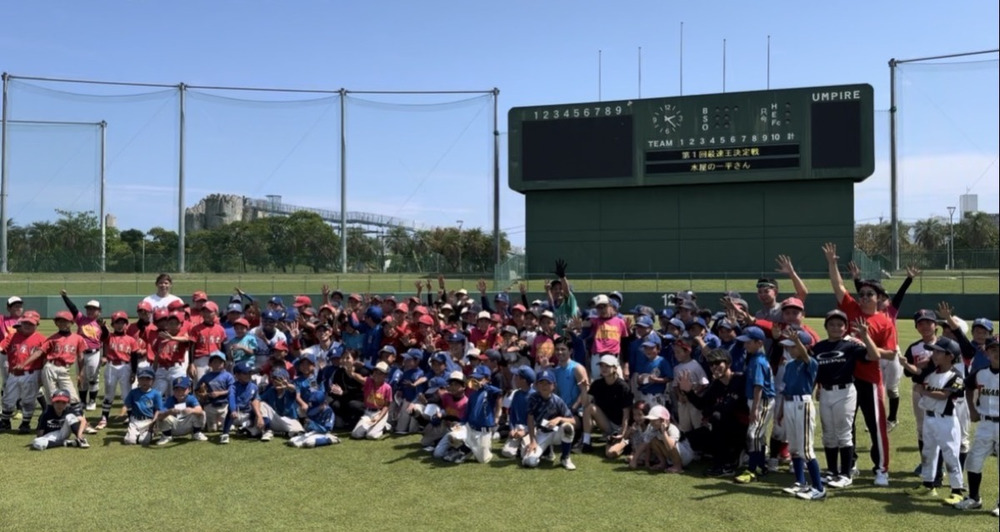

Kids Event
ボールひとつで始められるBaseball5を、地域の子どもたちへ届けるイベント一覧です。

走る・打つ・守るを短時間で体験できるメニューを中心に、初めての子どもたちも参加しやすいイベントとして展開します。
体育館や地域施設を活用し、学校や地域団体と連携しながらBaseball5の楽しさを届けます。インフルエンサーをゲストに迎え、イベントを盛り上げてくれました。
離島地域でも取り組みやすいスポーツとして、子どもたちが笑顔で体を動かせる体験機会をつくります。